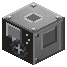

Blowing Engine
Era 2Steam and mechanics

idle

running
Next to a converter: air blast, one blower per shaft load. Next to an IC2 blast furnace (open hearth): fills empty cells with compressed air and keeps 8 in the furnace - put empty cells into the blower.
Parameters
| Era | 2 — Steam and mechanics |
|---|---|
| Multiblock | no |
| Drive | shaft 24 hp |
| What it does | blast: converter, Linde, compressed air cells for the IC2 blast furnace |
| Input energy | shaft 24 hp |
| Output | air |
| Made of | piston, bronze and iron gears, IC2 iron shaft, iron plates |
| hp (Blower) | 24 |
Numbers
| converter blower | 24 hp |
|---|
Fed by
- shaft ← Steam Engine, High-Pressure Steam Engine (transmission)
Feeds
- no Zavod machine uses its product